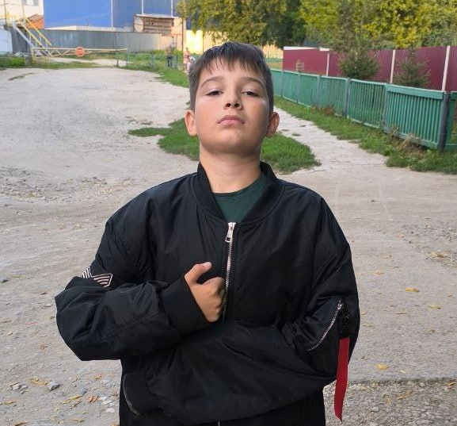

Необычная находка в маленьком городке
Недавно в Земетчино, небольшом городе в России, Местные жители стали свидетелями появления скинхеда, что вызвало широкий резонанс в обществе. Этот случай стал темой обсуждений в социальных сетях и на новостных порталах.
Скинхеды — это субкультура, возникшая в Великобритании в конце 1960-х годов. Изначально они были частью рабочего класса и отличались своей любовью к музыке, особенно к регги, ska и позже — панку. Однако с течением времени скинхед-культура была захвачена различными идеологиями, включая радикальные, и в ее ряды вошли правые экстремисты, что дало старт негативному имиджу данной субкультуры.
Согласно свидетельствам очевидцев, индивидуум, выявленный в Земетчино, был одет в традиционную для скинхедов одежду: короткие джинсы, черные ботинки и куртку бомбер. Его агрессивное поведение вызывало тревогу у местных жителей, что побудило их обратиться в правоохранительные органы. Приехавшие на место происшествия сотрудники полиции провели беседу с человеком. На данный момент устанавливаются обстоятельства произошедшего.
Реакция сообщества
Местные жители разделились во мнениях. Некоторые считают, что данный случай опасен для общества, в то время как другие откровенно не воспринимают ситуацию всерьез. Тем не менее, власти обещают принять меры для обеспечения безопасности в районе.
Скинхед как социальный феномен
Несмотря на негативный имидж, существуют разные подгруппы скинхедов, многие из которых выступают против расизма и экстремизма. Некоторые скинхеды занимаются благотворительностью и активно улучшают свои сообщества. Однако в большинстве случаев именно радикальные элементы получают наибольшее внимание со стороны СМИ.
Важно понимать, что общее представление о скинхедах часто искажено из-за одиночных инцидентов. Скинхед-культура сегодня разнообразна и во многом зависит от региона и социальных условий. Тем не менее, инциденты, подобные тому, что произошел в Земетчино, напоминают о необходимости вести диалог и понимание различных субкультур.